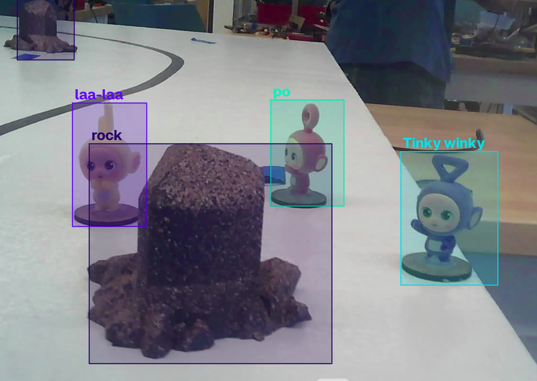

On-Robot Teletubby Detection
Getting a YOLO model to run usefully on a Raspberry Pi bolted to a robot that cannot afford to wait for it.

The vision half of the Autonomous Mars Rover. The course gives you points for spotting up to two unique Teletubbies and reporting each one with an LED flash.
Training the detector was the easy part. Four Teletubby classes plus rocks, a YOLO model, done. Everything interesting happened after that, when I had to make it run on a Raspberry Pi strapped to a robot that was already moving.
Constraints
A detector on my laptop answers one question: is it accurate. The same detector on our robot mid-run has to answer a few more at once.
- Inference isn't free. The Pi shares its cores with the UART link to the ESP32 and the OS. If I let inference take every core, the thing actually driving the robot starves.
- A frame is only useful if it's recent. The robot is moving while inference runs, so an answer about where a Teletubby was 400ms ago is worse than no answer.
- The robot can't pause. My state machine is line-following and stopping at checkpoints on its own clock. Vision had to fit around that, not the other way round.
Inference
The normal way to run a YOLO model is to let Ultralytics do it. One import, one call, boxes out. On a Pi that's the wrong trade. You're dragging a training framework and its whole dependency tree onto a robot to do one forward pass, and you get whatever preprocessing and postprocessing it decided on.
So I exported the weights to NCNN and drove the bare network myself: load the .param and .bin, letterbox the frame to a 320 square, convert to RGB float and transpose to CHW, run the extractor, then decode the raw output tensor by hand. Pull the class scores, take the argmax, threshold, run NMS through OpenCV.
That's more code than one Ultralytics call, and it's code I'd rather own. Everything that ended up mattering lives in the parts Ultralytics hides. Capping the thread count so inference leaves a core for the UART is one line on the net object. Dropping the rock class before NMS instead of after, which is the bug below, is only possible if you're the one calling NMS.
Frames
This one cost me the most time and it's the least obvious.
cv2.VideoCapture buffers frames internally. I set CAP_PROP_BUFFERSIZE to 1 and the driver just kept buffering anyway. So when I read a frame at the moment I was ready to run inference, I got whatever was queued rather than what the camera was seeing. Inference takes long enough that the queue is always full, which meant every detection I got was about a position the robot had already left.
My fix was a background thread that reads the camera continuously and throws the results away, keeping only the newest frame behind a lock. capture() then grabs whatever's freshest instead of whatever's next in line. Camera runs at its own rate, inference runs at its own rate, and they stop being coupled.
Bugs

Rocks were suppressing Teletubbies. The model detects rocks as a fifth class and our rover doesn't need them from vision. My instinct was to filter them out of the results. Too late. NMS runs first, and a confident rock box overlapping a Teletubby will delete the Teletubby. I had to drop ignored classes before NMS, not after.
The same Teletubby counted twice. Scoring wants two unique ones so re-reporting one earns us nothing. The model tells me the class but I didn't trust it enough to use for identity, so I got uniqueness out of colour instead. Take the region inside the box, mask out unsaturated pixels so the grey background doesn't drag the result, use the median hue as a fingerprint. A detection only counts as new if its hue is far enough from every hue I've already recorded.
It works, and it has a bug I never fixed. OpenCV hue wraps at 180 and my comparison uses plain linear distance, so a red Teletubby sitting near the wraparound can read as new twice. The fix is circular distance and it's two lines. Still sitting in my code as a TODO.
Result
In the end the Pi sends the ESP32 a single boolean over UART, wrapped in protobuf. Not a class, not a confidence, not a position. One bit.
That wasn't the plan. The original design had the Pi as a coprocessor owning real decisions, and the honest outcome is it ended up as a camera that says yes or no. All the work above runs on the Pi and one bit of it crosses the wire. If I did it again I'd either commit to the Pi being a sensor from the start, or actually use what it computes.